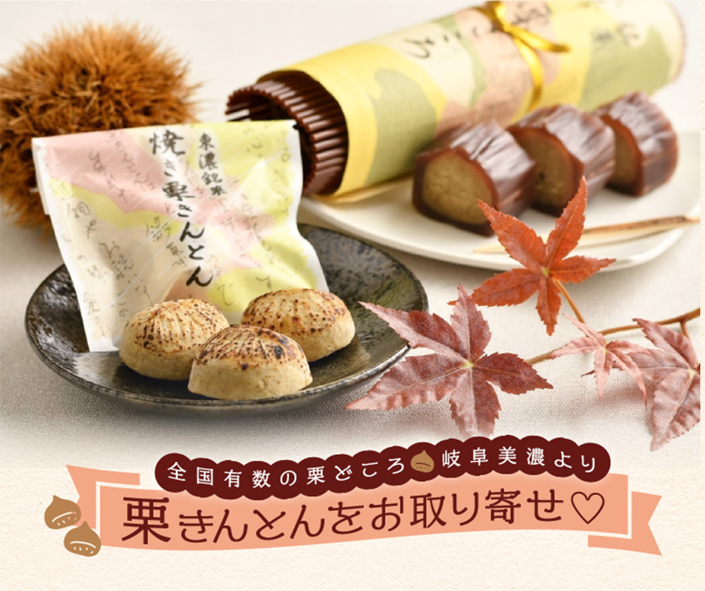

「栗きんとん」の美味しさそのまま、日持ちする焼き栗きんとんに仕上げました。職人が一つひとつ丁寧に手作りしています。
焼き栗きんとんをもっと見る


創業以来、松谷園の歴史を見てきた看板。

1972（昭和47）年創業、生菓子や引き菓子を冠婚葬祭場へ届けながら、和菓子店を営んでいた「御菓子処 松谷園」。個人のお客様にもっと気軽に足を運んで欲しい、という想いから2011（平成23）年、ショッピングセンターに隣接する今の場所に移転をし、丁寧なお菓子づくりを続けています。
商品は栗きんとんを中心に、栗きんとんを羊羹で巻いた「栗ごころ」や栗そのものを使った「栗蒸羊羹」など、栗のお菓子がメイン。数年ごとに新商品開発をし、新しい味も求めており、栗きんとんを焼いた「焼き栗きんとん」は多治見市観光協会の推奨品に認定されているなど、地元にも貢献をしています。
また、全国からの注文も受けており、大勢に親しまれている和菓子店です。

- 食感が楽しい「栗きんとんわらび」と「黒糖わらびもち」。

- 多治見市のキャラクターが描かれた「うながっぱ 美濃 初衣」。


丁寧に作り、ほっとできる味をお届けすることです。

東濃地域は栗が特産。それにちなみ、栗を中心にした和菓子を味わっていただきたいと、手作りをしています。季節や地域を感じられる和菓子を目指しています。
そして、和菓子は時間が経つと味が落ちてしまうため、なるべく新鮮な状態、できたてのままを食べていただくことを大切にしています。


栗きんとんと羊羹のおいしさを
同時に味わえる和菓子です。
20年ほど前にオリジナル商品として考えたお菓子です。棒状の栗きんとんをのし状にした羊羹で巻き、竹皮に包んで蒸します。蒸すことで羊羹が一度とろとろになるため、羊羹の甘さが栗きんとんと馴染み、おいしさを引き出します。
蒸し上げたものを冷やすことで再び羊羹が固まり、栗ごころが完成します。脱酸素剤と包装し、日持ちをするようにしました。また、詰め合わせの化粧箱の掛け紙には多治見市の花、桔梗をデザインし、多治見を感じていただいています。


お客様が松谷園のお菓子を
リピートしてくださる時です。
私たちが手作りした和菓子を何度もお買い求めいただける時は嬉しいです。中でも、「栗ごころ」はリピート率が高く、作りがいを感じています。
お赤飯やお餅なども得意としていますので、お祝いや行事のお菓子などの要望にもお応えしています。

御菓子処 松谷園

時／9時〜17時
休／水曜日、第3火曜日
岐阜県多治見市住吉町3-53-2
Tel.0572-26-8565

配送について
- 常温配送
保存について
- 焼き栗きんとん：製造日から60日
- 栗ごころ：製造日から50日
- 直射日光、高温多湿を避けて冷暗所にて保存してください（栗ごころは開封後冷蔵庫にて保存してください）。
お届けについて
- 常温にて配送します。
- お届け日・お時間帯のご希望がある場合は、ご入金が確認できる日の7日後以降をご指定ください。
- 配送の混雑状況や交通事情等により、ご希望のお届け日・お時間帯にお届けできない場合がございます。
送料について
- 焼き栗きんとん：10個入りは１箱930円、15個入は1箱1,000円
- 栗ごころ・LifeeStars特別セット：１箱930円
- 同一住所への配送は2箱まで上記料金、3箱以上の場合は1,430円（15個入は1,500円）
- 沖縄・北海道への配送は+700円
返品について
- 食品のため、お客様のご事情による商品の返品・交換はお受けいたしかねます。但し、お届けの商品がお客様のご注文内容と異なる場合は対応いたします。商品到着後３日以内に弊社にご連絡いただけましたら、良品の注文商品と交換させていただきます。
- 詳細確認のため、不良箇所の画像添付をお願いする場合がございます。
- 当該商品の返送及び再送に要する送料等は、弊社にて負担いたします。
お支払い方法
- クレジット決済
- 銀行振込
銀行振込先 ［振込手数料はお客様のご負担］
- 三菱UFJ銀行 岐阜支店
普通預金 0105882 カ)アドキットインフォケーション - 十六銀行 島支店
普通預金 1339111 カ)アドキットインフォケーション
カード決済、または代金入金確認後、申し込み順に随時発送。電話注文は銀行振込のみとなります。